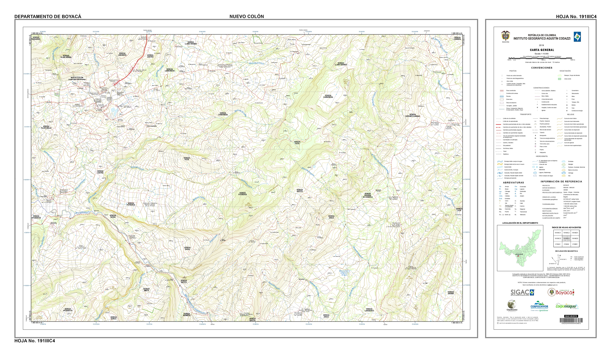
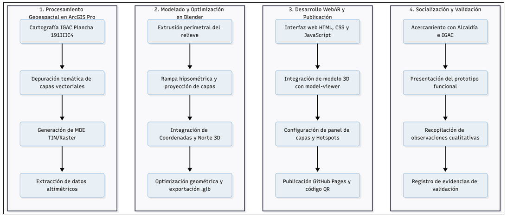
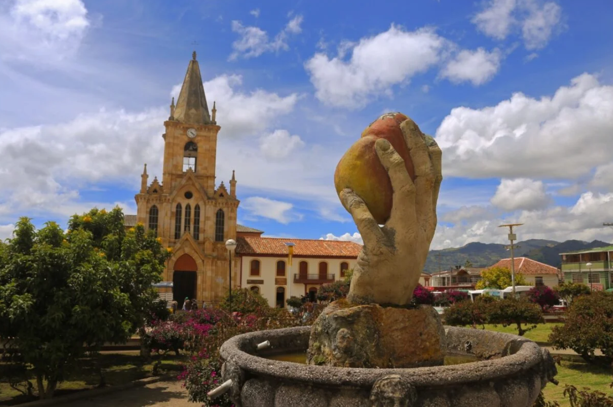
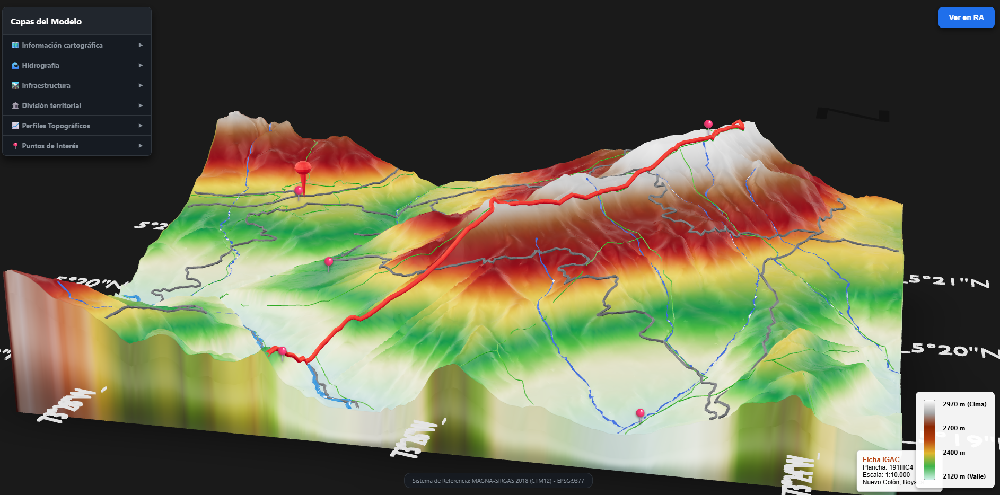
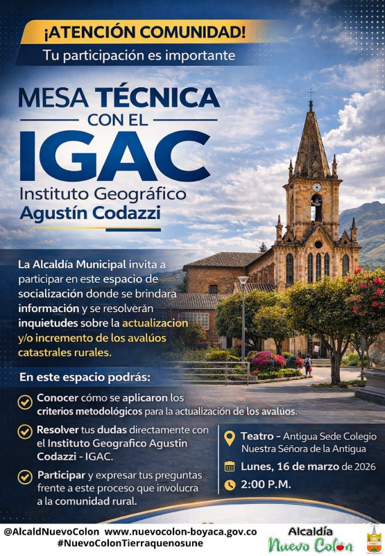

Introducción al Proyecto
La comprensión de la topografía a partir de planos bidimensionales representa un desafío técnico. Este proyecto de grado propone una solución innovadora integrando Sistemas de Información Geográfica (SIG) y modelado 3D para llevar la plancha oficial del IGAC a un entorno de Realidad Aumentada interactiva (WebAR). El objetivo es facilitar el análisis espacial sin requerir la instalación de aplicaciones externas, democratizando el acceso a la información del relieve.
Área de Estudio
El proyecto toma como base la información oficial de la Plancha 191-III-C-4 del Instituto Geográfico Agustín Codazzi (IGAC), a escala 1:10.000, ubicada en el municipio de Nuevo Colón, Boyacá.
A partir de sus curvas de nivel, drenajes y vías, se generó un Modelo Digital de Elevación (MDE) que sirvió como estructura base para la proyección tridimensional del terreno, manteniendo el rigor cartográfico de la fuente original.

Metodología de Desarrollo
El flujo de trabajo técnico se dividió en cuatro grandes fases: procesamiento geoespacial, optimización de geometría tridimensional, estructuración de la arquitectura web y validación final del prototipo interactivo.

Galería y Resultados Visuales


